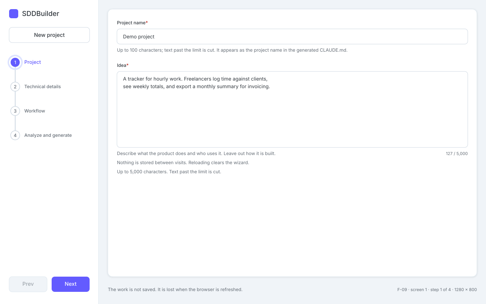
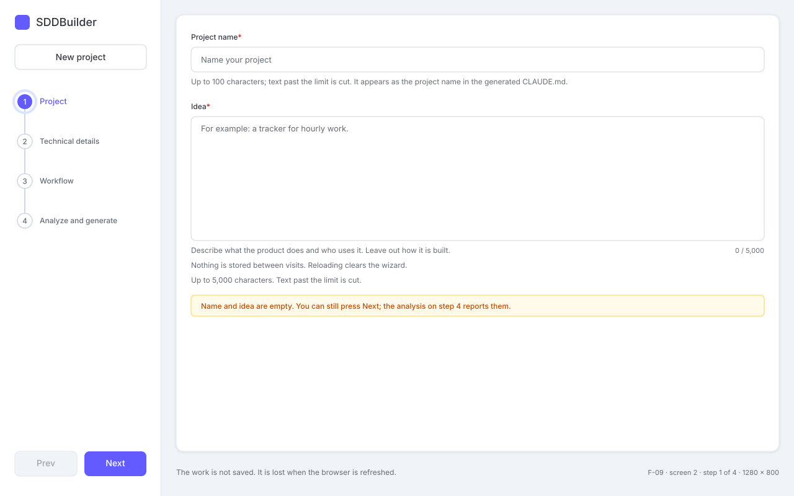
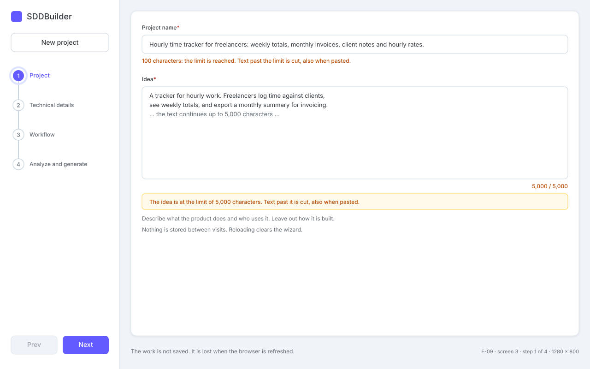

Step 1 of the wizard on the F-08 frame: the name and the idea, the 100-character name limit, the 5,000-character idea with its counter. Wireframes only; read screens.md.
Name and idea filled in. Prev is disabled on step 1; Next is enabled.

Both fields empty. Next stays enabled; the analysis on step 4 reports the blank fields.

The name is at 100 characters and the idea at 5,000. The counter shows 5,000 / 5,000 and the text past the limit is cut.
